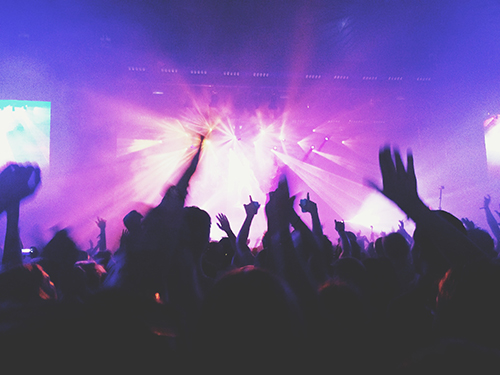

There are so many ways to get involved in the social scene on campus.

Find An Upcoming Event Here
7 Ways to Get Socially Acclimated
-
Join a social fraternity
-
Play on an intramural team
-
Start a STep business with your friends
-
Get lunch with someone new every day
-
Try out for a varsity sport
-
Join a professional fraternity
-
Have a new study group for every class